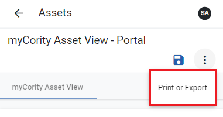

From the AssetDetails view, click the vertical ellipsis at the top right.
Click Print or Export. A read-only view of the asset will display. The view will have Print, ExporttoPDF, and Back to previous view buttons.

To print the event report, click Print. If your device is connected to a printer, a Print dialog will display. Select your desired printer settings and click Print.
To export the asset record to PDF format, click Export to PDF. A PDF copy of the asset record will download to your device.